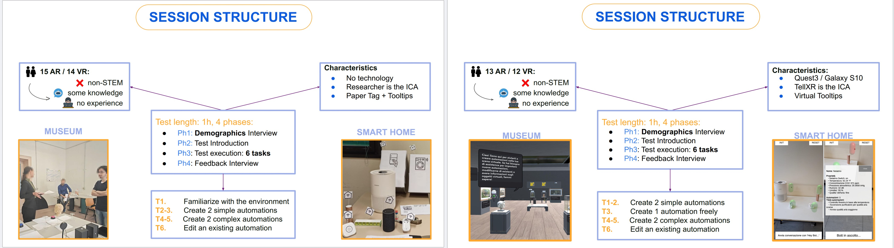
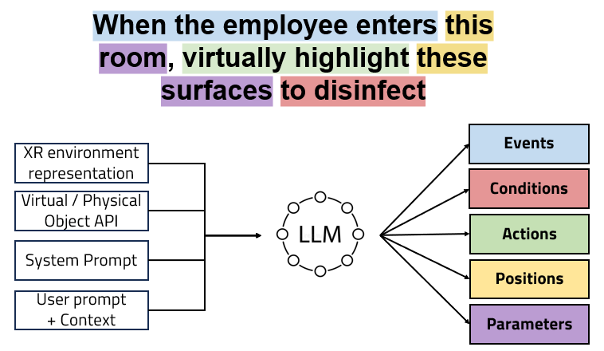
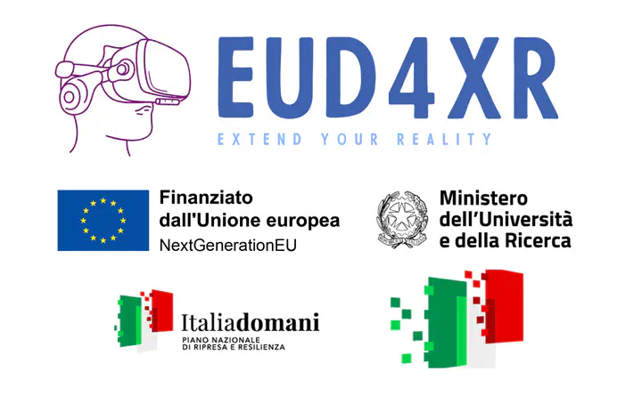
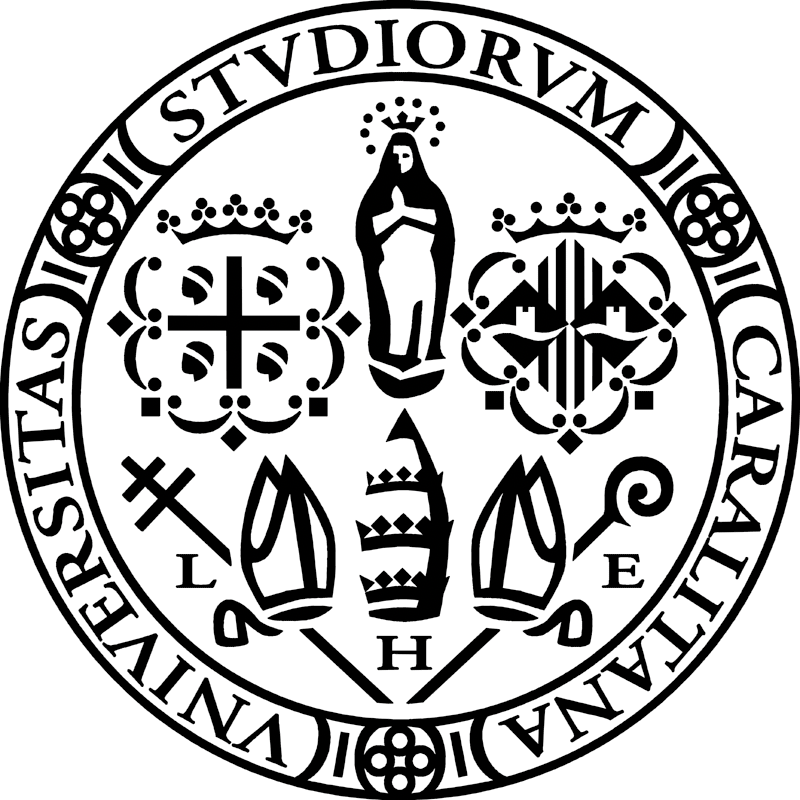
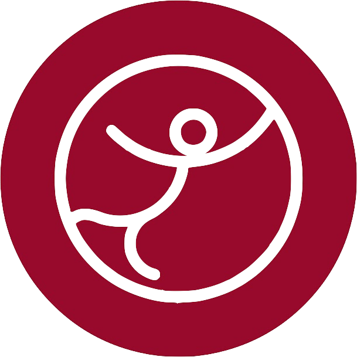

About Me
I am a PhD student in Computer Graphics at the University of Cagliari. My research primarily focuses on volume mapping, where I investigate novel algorithms and innovative applications. I also work on Human-Computer Interaction and Extended Reality (XR), exploring how emerging technologies can enhance user experiences and interaction paradigms.
Publications
Here are some of my recent publications:
-
Conversational Rule Creation in XR: User’s Strategies in VR and AR Automation
Conversational Rule Creation in XR: User’s Strategies in VR and AR Automation
-
Empowering end-user in creating extended reality content with a conversational chatbot
Empowering end-user in creating extended reality content with a conversational chatbotJ Mereu, V Artizzu, A Carcangiu, LD Spano, L Simeoli, A Mattioli, M Manca, C Santoro, F PaternòPresented at Second Workshop on Engineering Interactive Systems Embedding AI Technologies - EICS 2024[Paper]
Projects I Collaborated On
-
EUD4XR
EUD4XRThe project aims to empower end-users to create XR content autonomously by developing an End-User Development (EUD) methodology. This involves three roles: Element Builders (EB), professional developers providing pre-defined XR elements; End-User Developers (EUDevs), users without programming skills who compose and configure elements; and XR consumers, the final users. EUDevs will use an authoring tool to specify object interactions in natural language sentences, with guidance from an intelligent Conversational agent.[Website]
Education
Here is a summary of my academic journey:
-
PhD in Electronical Engineering and Computer Science🏛️ University of Cagliari, Italy🛠️ Currently working on Volume Maps⏳ October 2015 – February 2019
-
MSc Computer Science🏛️ University of Cagliari, Italy📅 September 2013 – September 2015
-
BSc Computer Science🏛️ University of Cagliari, Italy📅 September 2010 – July 2013
Experiences
Here are some of my professional and teaching experiences:
-
Post-doc Researcher👨🏻💻 Project "" within the EUD4XR project📅 March 2024 - February 2026🏛️ CG3HCI Lab., University of Cagliari, Italy
-
Fullstack Developer👨🏻💻 Django/React apps📅 February 2022 - August 2023🏛️ Webranking, Cagliari, Italy
-
Backend Developer👨🏻💻 Development algorithms and tools for analysing football data, Django RESTFul API📅 June 2019 - February 2022🏛️ FootureLab - Abinsula, Sestu, Italy
-
Research Fellow👨🏻💻 Project ""📅 November 2018 - June 2019🏛️ CG3HCI Lab., University of Cagliari, Italy
-
Teaching Assistant - Human-Computer Interaction👨🏻💻 (lessons and exercises)🏛️ Bachelor Degree in Computer Science, University of Cagliari, Italy📅 A.Y. 2016-17, 2017-18, 2018-19, 2024-25, 2025-26
-
Teaching Assistant - Basics of Web Programming👨🏻💻 Basic concepts of web development with MVC pattern (lessons and exercises)🏛️ Bachelor Degree in Computer Science, University of Cagliari, Italy📅 A.Y. 2015-16
-
Educator for Formatica courses👨🏻💻 Design of VR application with Unity engine, HCI concepts👨🏻💻 Basic concepts of videogame design and development with Unity Engine📅 A.Y. 2024-25